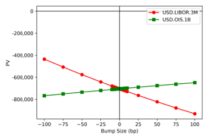

1.7.1. Linear Interest Rate Swaps#
1.7.1.1. Table of Contents#
1.7.1.2. 1. Executive Summary#
Interest Rate Swaps (IRS) are pivotal instruments in modern financial markets, serving as critical tools for managing interest rate exposure and facilitating market-making activities. These derivatives are extensively utilized not only for hedging interest rate risks across diverse asset classes but also for speculative and arbitrage strategies.
This document outlines the framework for pricing, valuation, and risk management of linear interest rate swaps. Linear swaps, by definition, exclude complex features requiring volatility adjustments, such as Constant Maturity Swaps (CMS), payment delays, or reset-in-arrears mechanisms. However, the principles outlined herein may be extended to scenarios where such adjustments are deemed negligible.
The swap pricing library is also integral to the construction of interest rate curves, as detailed in [10]. These curves are calibrated to observable market data, ensuring robust and consistent valuation across a spectrum of financial instruments.
Let me know if youd like me to proceed with rewriting the remaining sections in this format!
1.7.1.3. 2. Scope#
1.7.1.3.1. 2.1 Model Purpose and Intended Usage#
This document details the pricing, valuation, and risk management of various linear swaps. Swap analytics are deterministic relative to the market data used (i.e., curves) and represent the structural mechanics of the swaps. The pricing and valuation are based on simple arithmetic of the different components.
The document explains the components of swap pricing, common analytics, and the pay-offs of various types of swaps. It is limited to linear swaps that do not require convexity adjustments due to volatility.
1.7.1.3.2. 2.2 Conceptual Soundness#
Linear swap analytics rely on the structure of the swap payoff, which is detailed in the swap trade confirmation. The term sheet includes specifics such as accrual periods, fixing dates, payment dates, and the observable interest rate to be paid on each payment date.
The models used in swap analytics include forecast and discount curves for projecting future cash flows and discounting them. Detailed documentation of these curves can be found in [10].
Most literature focuses on the theory of rate forecasting and swap discounting rather than real-world swap mechanics. However, [11] provides in-depth details on the different types of dates used in valuation and their generation, though it mistakenly refers to the fixing date as the reset date. The rate definitions in [5] distinguish between the two.
The purpose of the Linear Interest Rate Swap is to accurately calculate cash flows, PV, and risk measures using curves generated by the New Curve Framework (GMD1746) [10]. This includes various types of linear swaps allowed under ISDA. These calculations are mechanical and prescribed by the trade confirmation and ISDA, with no alternative approaches considered.
Risk metrics can be calculated using shocked curves via the New Curve Framework (GMD1746) or Adjoint Algorithmic Differentiation for automatic derivatives. The linear swap model also provides standard risk functions such as DV01 (also known as PV01 or Annuity in other literature).
Figure 2.1: Overview of the Linear Interest Rate Swaps Model

As mentioned, convex swaps which require additional convexity adjustments are not supported in this model; this model will only provide linear valuations of any convex products attempted to be valued.
1.7.1.4. 3. Product / Payoff / Portfolio#
1.7.1.4.1. 3.1. Description#
The traditional textbook description typically describes a basic swap as comprising two legs of cash flows, whereby the agent and a counterparty swap a leg of fixed-rate cash flows for a leg of floating-rate cash flows. A cash flow leg comprises a series periodic of cash flows from the swap start date till the swap maturity.
Swaps can broadly be categorised as follows:
Single-currency fixed/float swaps - comprising of a fixed leg and a floating leg both in the same currency. The fixed rate on the fixed leg is usually set so that the PV of the swap is zero at inception (par-swap). The payment frequency of the fixed leg may be different from that of the floating leg.
Single-currency basis swaps - comprising of two floating legs, but each paying/fixing on a different frequency, e.g. quarterly vs. semi-annual (also known as a 3s/6s basis swap, i.e. 3M vs. 6M). A spread over the floating rate is usually applied to one of the legs and is usually set to a value such that the PV of the swap is zero at inception.
Cross-currency swaps - comprises two legs that pay in different currencies with the ratio of their notionals set to the FX rate between the two currencies. These legs may be any combination of fixed and floating. There is also a particular type of cross-currency swap where the notional of one of the legs varies according to the prevailing FX rate. Again, the fixed rate or spread is set such that the PV of the swap is zero at inception.
Averaging swaps - one of the legs pays a weighted averaged of observed rates for each cash flow.
Compounding swaps - one of the legs pays a geometrically averaged rate for each cash flow.
IMM swaps - cash flows are paid on IMM dates - i.e. the third Wednesday of March, June, September, December.
OIS swaps - these are fixed vs. floating swaps where the floating leg is derived from Overnight (O/N) rates; however rather than paying daily, the rate is compounded to pay quarterly or annually. They are sometimes referred to as Averaging (i.e. geometrically averaging).
Despite the broad categorisations above, it can be seen that these may not be mutually exclusive and in fact, many swaps exist that have combinations of the above categorisations, e.g. a cross-currency IMM swap, a single-currency basis swap where one leg is compounding. The Linear Swap Model allows the flexible combination of these categories, as well as being able to generalise a swap with an arbitrary number of legs.
1.7.1.4.1.1. Dates#
\(t_{i}^{pay}\) corresponds to the \(i\)th coupon/cash flow period.
\(t_{i}^{ps}\) Payment date for the \(i\)th period.
\(t_{i}^{as}\) Accrual start date for the \(i\)th period. This denotes when a rate begins accruing for the period.
\(t_{i}^{ac}\) Accrual end date for the \(i\)th period. This denotes when a rate stops accruing for the period.
\(t_{i}^{fix}\) Fixing date for the \(i\)th period floating rate. This is when the rate is known and published.
\(t_{i}^{fs}\) Forecast start date for \(i\)th period floating rate. This is used in conjunction with the forecast end date to project a rate corresponding to the period spanning [\(t_{i}^{fs}\), \(t_{i}^{fc}\)].
\(t_{i}^{fe}\) Forecast end date for \(i\)th period floating rate. This is used in conjunction with the forecast start date to project a rate corresponding to the period spanning [\(t_{i}^{fs}\), \(t_{i}^{fc}\)].
1.7.1.4.1.2. Notation#
\(A(t)\) cash flow amount paid at time \(t\).
\(N,N(t_{i})\) Notional - either constant throughout, or corresponding to the \(i\)th period.
\(c,c(t_{i})\) Known fixed rate - either constant throughout, or corresponding to the \(i\)th period. This is usually set so that the PV of the swap is zero at inception.
\(\tau(t_{a},t_{b})\) Daycount fraction between \(t_{a}\) and \(t_{b}\) calculated using the relevant day count convention.
\(Z(t_{a},t_{b})\) Discount factor between \(t_{a}\) and \(t_{b}\) read from the relevant discount curve.
\(r(t_{i}^{fix},t_{i}^{fs},t_{i}^{fc})\) Floating interest rate spanning [\(t_{i}^{fs}\), \(t_{i}^{fc}\)] that fixes at time \(t_{i}^{fix}\). If the fixing has not been published, then this is projected using a forecast curve with dates \(t_{i}^{fs},t_{i}^{fc}\), as inputs.
\(s,s(t_{i})\) Known spread over the floating interest rate - either constant throughout, or corresponding to the \(i\)th period. This is usually set so that the PV of the swap is zero at inception.
\(\beta,\beta(t_{i})\) Known floating-rate multiplier - either constant throughout, or corresponding to the \(i\)th period.
1.7.1.4.1.3. 3.1.1 Leg Types#
Here, we discuss the different leg types possible.
1.7.1.4.1.4. Standard Fixed Leg#
This is a leg that periodically (e.g. every three months) pays a fixed rate, \(c\) during the life of the trade. As such, the amount paid at each payment period is:
In the most general case the notional, and fixed rate could vary deterministically (these would the values would be pre-agreed between the agents at trade inception) throughout the life of the trade.
1.7.1.4.1.4.1. 3.1.1.2 Standard Floating Leg#
This is a leg that periodically pays a floating rate, \(\tau(t_{i}^{fix},t_{i}^{fs},t_{i}^{fe})\) during the life of the trade. This rate is usually known in advance before the start of the cash flow period and paid at the end. Unknown rates are forecast using an interest rate curve.
Floating Leg with spread/margin, \(s\) - typically used in basis swaps (floating vs. floating):
There are also cases of floating-rate multipliers (also commonly known as gearing), resulting in the more generic formulation:
In the most general case, the notional, spread, and gearing could vary deterministically (these values would be pre-agreed between the agents at trade inception) throughout the life of the trade.
1.7.1.4.1.4.2. 3.1.1.3 Compounding Leg#
Similar to the standard floating leg, except the rate for each cash flow is a compounded rate from a series of observations - essentially, the interest from one period is not paid out and is instead reinvested for subsequent periods. A simple example is a leg that observes the quarterly interest rate but is paid annually - i.e., four compounding periods for each cash flow period. Several different ways of compounding are possible:
CompoundInclusive - This implements the basic compounding method defined by ISDA where the spread is treated in the same way as the observable rate. The calculation is described in [7].
CompoundFlat - This implements the Flat Compounding method defined by ISDA where both the interest earned from the rate and the spread are compounded (reinvested), but only compounded at the observable rate. The calculation is described in [7].
CompoundExclusive - Compounding only affects the interest that is earned from the observable interest rate and not on the spread/margin, which accrues using simple interest. While not an ISDA compounding method, the calculation is nevertheless described in [7].
1.7.1.4.1.4.3. 3.1.1.4 OIS Leg#
These are a type of compounding leg where the rate is based on the Overnight (O/N) rate and is compounded daily until the payment date. Unlike other types of compounding where the parameters pricing of the compounding are specified in the trade term sheet, OIS compounding terms are defined by ISDA [5]: $\( \left[\prod_{j=1}^{d_{0}}\left(1+\frac{ON_{i}\times n_{i}}{\alpha}\right)-1\right] \times\frac{\alpha}{d} \)$ (3.7)
where:
Symbol |
Description |
|---|---|
\(d_{0}\) |
Number of business days in the calculation period. |
\(i\) |
Index to represent the relevant business day within the calculation period. |
\(ON_{i}\) |
Overnight rate for day \(i\). |
\(n_{i}\) |
Total number of calendar days for which the rate is \(ON_{i}\). |
\(d\) |
Number of calendar days in the calculation period. |
\(\alpha\) |
Daycount basis - usually either 360 (e.g., USD-Fed-Funds) or 365 (e.g., GBP-SONIA). |
1.7.1.4.1.4.4. 3.1.1.5 Averaging Leg#
Similar to the standard floating leg, except the rate for each cash flow is an arithmetic averaged rate from a series of observations: $\( r(t_{i})=\frac{\sum_{j=1}^{m}r(t_{j-1})\cdot\tau(t_{j}^{\text{BS}},t_{j}^{\text{ def}})}{\tau(t_{i}^{\text{BS}},t_{j}^{\text{def}})} \)$ (3.8)
Where: \(t_{i-1}\leq t_{j}\leq t_{m}<t_{i}\)
As can be seen from the formula, the averaging introduces a payment-delay since the observed rates are not paid at their natural maturity but at a later payment date. This means that these swaps are convex and should be priced via a non-linear pricer. However, there are special cases where using the linear model is valid; when the forecast curves used to project the rates have been calibrated using averaging instruments.
1.7.1.4.1.5. 3.1.2 Swap Features#
1.7.1.4.1.5.1. Cross-Currency#
A cross-currency swap is similar to a standard swap and can be any combination of fixed/floating legs, except that each leg pays a different currency, and the ratio of the notionals of the two legs is equal to an agreed FX rate, e.g., for EUR/USD swap: $\( N_{\text{USD}}=N_{\text{EUR}}\cdot FX_{\text{EURUSD}} \)$ (3.9)
Cross-currency swaps usually have front and back notional exchanges.
1.7.1.4.1.5.2. Resettable Cross-Currency Basis Swap#
There is also another class of cross-currency swaps called mark-to-market (or resettable) cross-currency swaps, similar to the standard cross-currency swap, except that the notional on one leg (resettable-leg) is reset (rescaled) at each reset date with the ratio of the prevailing FX rate at the reset date to the FX rate at the previous reset date. When the notional is reset, the difference in notional from the previous reset is paid as an interim notional exchange. The swap, like the non-MTM basis swap, will have front and back notional exchanges on each leg.
Assuming that the USD leg is the resettable leg, we have: $\( A_{USDinterest}(t_{i})=N_{EUR}\cdot FX_{EURUSD}(t_{i}^{gs})\cdot r_{USD}(t_{i}^{ fix},t_{i}^{fs},t_{i}^{fs})\cdot\tau(t_{i}^{gs},t_{i}^{ge}) \)\( (3.10) \)\( A_{USDexchange}(t_{i})=-N_{EUR}\cdot(FX_{EURUSD}(t_{i}^{gs})-FX_{EURUSD}(t_{i}^ {gs}.)) \)$ (3.11)
Note: If we are receiving USD interest-rate payments, that means we have lent out cash; hence, if the FX has moved such that the USD notional has increased, then we need to lend additional USD cash to make up the shortfall. This is the reason \(A_{USDexchange}(t_{i})\) is negative in the above formula.
Total payment for the USD leg is therefore: $\( A\left(t_{i}\right)=\begin{cases}-N_{EUR}\cdot FX_{EURUSD}(t_{i}^{gs})&i=0\\ A_{USDinterest}(t_{i})+A_{USDexchange}(t_{i})&0<i<n\\ A_{USDinterest}(t_{n})+N_{EUR}\cdot FX_{EURUSD}(t_{n}^{gs})&i=n\end{cases} \)$ (3.12)
The non-resettable leg usually contains the margin, set such that the swap has zero PV at inception.
1.7.1.4.1.5.3. Stubs#
A stub occurs when there is an irregular period in the swap leg. For example, a quarterly leg with maturity 14M would have four regular 3M periods with an irregular 2M period (short stub) or three regular 3M periods with an irregular 5M period (long stub). The stub can either be at the start (front stub) or end (back stub) of the leg. Since the period is irregular, a rate different to the regular observation is required. In the above example, a 2M (for the short stub) or 5M (for the long stub) observable rate is used. In cases where no such observable rates exist (e.g., a 2 jM stub), an interpolation is applied.
ISDA states that the interpolation should be linear on simple rates [6]; however, in the Linear Swap Model, the interpolation is performed on continuously-compounded rates. An assessment of the impact due to this difference can be found in Section 8.4 on page 38.
1.7.1.4.1.5.4. Notional Exchanges#
One of the common trade features of interest rate swaps is notional exchanges. This specifies whether there are exchanges of notionals at the beginning (front notional exchange) and end of the trade (back notional exchange). This is common for cross-currency trades where the notionals on each leg will be in a different currency, and the amount is different due to the FX conversion. For MTM cross-currency swaps, there may also be interim notional exchanges where changes in the FX rate at each reset date cause a change in the notional of the resetting leg, resulting in the difference being paid/received.
1.7.1.4.1.5.5. 3.1.2.5 IMM#
These are standard swap legs as described above, except that their regular dates occur on IMM (International Monetary Market) dates, which are defined as the 3rd Wednesday of March, June, September, and December.
1.7.1.4.1.5.6. 3.1.2.6 Mandatory Early Termination#
There exists a trade feature called Mandatory Early Termination (or Mandatory Break). This is where a trade terminates before the natural maturity of the trade at a date agreed with the counterparty. This date is agreed at trade inception and is written in the trade term sheet. For example, a 10-year swap with a mandatory early termination in 3 months means that the trade will terminate in 3 months. Note that in terms of market risk, the trade still has interest rate exposure up to 10 years, but only counterparty credit exposure up to 3 months. At the early termination date, the trade will pay a fee equal to the PV of the remaining cash flows. More details about this feature can be found in Article 17 of the ISDA Definitions 2006 [5]. In terms of valuation, this creates an impact if the terms of the termination specify the discounting rate to apply when calculating the settlement amount.
1.7.1.4.1.6. 3.1.3 Term Deposits#
A term deposit represents a stream of floating payments plus margin with notional exchanges. They can be represented as a swap with a single floating leg. $\( A(t_{i}) = \begin{cases} -N & i = 0 \\ N \cdot (\beta_{i} \cdot \tau(t_{i}^{fix}, t_{i}^{fs}, t_{i}^{fe}) + s) \cdot \tau(t_{i}^{ps}, t_{i}^{ac}) & 0 < i < n \\ N(1 + (\beta_{i} \cdot \tau(t_{i}^{fix}, t_{i}^{fs}, t_{i}^{fe}) + s) \cdot \tau(t_{i}^{ss}, t_{i}^{ac})) & i = n \end{cases} \)$ (3.13)
Note: In practice, \(\beta_{i}\) is 1.
1.7.1.4.1.7. 3.1.4 Forward Rate Agreements#
At its simplest, a Forward Rate Agreement (FRA) can be viewed as a single-period forward-starting swap. However, they are cash-settled, which means that they pay in advance, resulting in some convexity. This is handled by discounting the payoff between the FRA settlement date and the FRA maturity date at the prevailing forecast rate: $\( A(t_{i}^{pay}) = N \cdot \frac{r_{fra} - \tau(t)}{1 + \tau(t) \cdot \tau(t_{settle}/maturity)} \)$ (3.14)
1.7.1.4.1.7.1. Relationship to Other Approved Models / Payoffs#
This feeds into the New Curve Framework (CMDT746) [10], which is used to build interest rate curves where swaps are used as calibration instruments.
1.7.1.4.1.7.2. Inputs#
The inputs can be split according to the type of swap/leg being created. They can also be created from a set of parameters or via explicit construction of each cash flow. The latter allows for customized swaps that may not fit into the common parameterizations.
1.7.1.4.1.8. 3.3.1. Common#
Name |
Description |
|---|---|
Start |
Start of the swap. This can be either an explicit date or a tenor with a reference date, which is used for forward-starting swaps. |
End |
End of the swap. This can either be an explicit date or a tenor which is offset from the start date (see AddToAdjusted) of the swap. |
AddToAdjusted |
For forward-starting swaps, where the End is specified as a tenor, this flag specifies whether the final end date is calculated off the business-day adjusted forward start date (for cases where the start date is a non-business day). |
Frequency |
Accrual/payment frequency. |
PaymentDaysAdjustment |
Payment offset from the accrual end date. |
StubType |
Default stub type, e.g., Front or Back. |
MinStubLength |
The minimum stub length to allow before rolling up into a long stub. |
RollConvention |
If a date is a non-business day, this specifies how to roll to a good business day. |
HolidayList |
The business calendar used to determine if a particular date is a good business day. |
AccrualBasis |
Day count basis used for the accrual day count fraction, i.e., \(\tau(t_{a}, t_{b})\). |
ShortTenorRollConvention |
For tenors that are specified as terms of days, weeks, this is the business day convention that should be used. |
UseEOMRule |
If the start is on the last business day of the month, this flag specifies whether subsequent dates should also roll to the last business day of the month. For example, if the start date is on 28th February, then this flag controls whether subsequent dates roll to 28th of the month or 30th/31st. |
PaymentDaysRollConvention |
Business day convention used for the payment dates. |
1.7.1.4.1.9. 3.3.2 Fixed Leg#
N/A - all described in Section 3.3.1.
1.7.1.4.1.10. 3.3.3 Floating Leg#
Name |
Description |
|---|---|
StartOffset |
A tenor by which to move the fixing Date from accrual start. |
FixingDaysHolidayList |
The holiday list to use for the fixing days. |
1.7.1.4.1.11. 3.3.4 Resettable Cross-Currency#
Name |
Description |
|---|---|
XCCYNotionalFixingHolidayList |
Calendar for Notional Fixing day of the MTM Swap Resetting Leg. |
XCCYNotionalResetHolidayList |
Holiday List for XCCY Notional Reset. |
XCCYNotionalFixingDaysAdjustment |
A tenor to adjust the notional fixing day for MTM Cross-Currency Swaps. |
FromStart |
Whether the initial notional requires FX resetting, or has already been reset. More relevant for forward-starting trades, where the initial FX rate used has been pre-agreed. |
InitialResetOnly |
This signifies that only the initial notional requires resetting before staying fixed for the rest of the life of the trade. This is relevant for forward-starting (non-resettable) cross-currency swaps where the FX used for the notionals is unknown and requires a future fixing. |
HasInterimNotionalExchange |
Whether to pay interim notional exchanges. |
NotionalResetFrequencyMultiplier |
A multiplier to specify how frequently to reset the FX relative to the interest rate reset frequency. |
1.7.1.4.1.12. 3.3.5. Averaging#
Name |
Description |
|---|---|
AverageType |
The type of averaging to apply (Simple, Weighted, Unweighted, OvernightIndexAverage). |
AverageFrequency |
The frequency of averaging resets. |
AverageRollingDay |
The day of the month on which to reset the averaging. |
AverageDayOfWeek |
The day of the week on which to reset the averaging. |
AverageForecastBasis |
The day count basis for the averaging rates. |
AverageRollConvention |
The roll convention to apply to the averaging dates. |
AverageCutoffType |
Determines how the rates on the observations after the cut-off date are generated. |
AverageCutoffTenor |
The tenor to use to determine the end of the cut-off period. |
AverageRoundType |
The type of rounding to apply (RoundThenAverage, AverageThenRound). |
AverageRoundDirection |
The direction of rounding to apply (NoRounding, RoundUp, RoundDown, RoundToNearest). |
AverageRoundPlaces |
The number of decimal places to round to. |
AverageRoundIncrement |
The increment after the decimal point between two rounded values. |
AverageHolidayList |
Calendar for averaging anniversary days. |
AverageFixingHolidayList |
Calendar for averaging fixing days. |
AverageFixingDaysAdjustment |
A tenor to adjust the average fixing day by. |
UseFirstObsBeforeStartDate |
Whether taking the first observation (apart from the first cash flow) from the start. |
1.7.1.4.1.13. 3.3.6. Compounding#
Name |
Description |
|---|---|
RateCompoundingFrequency |
The compounding frequency for the rate definition. |
CompoundMethod |
The compounding method to apply. |
1.7.1.4.1.14. 3.3.7. Mandatory Early Termination#
Name |
Description |
|---|---|
MandatoryBreakDate |
Date of the Mandatory Early Termination. |
BreakSettlementType |
Cash settlement method. |
1.7.1.4.1.15. 3.3.8. Other Features#
Name |
Description |
|---|---|
ExchangeType |
Type of the Notional Exchange (Front, Back, Both). |
FirstRollDate |
The start date of the first regular cash flow. |
UseNthWeekdayOfMonth |
Flag to indicate whether to modify the rolling days to a fixed day. |
RollingDay |
The rolling day of the month to use. |
WeekOfMonth |
The week of the month to roll in. |
DayOfWeek |
The day of the week to roll in. |
IsIMMSwap |
Whether to roll onto IMM dates. |
1.7.1.4.2. 3.4. Outputs#
N/A
1.7.1.4.3. 3.5 Payoff Analysis#
As can be seen from the above, the payoff on each cash flow date can be described as either fixed or floating.
Fixed cash flows, whether constant or variable, are fixed and known from trade inception and hence have no interest rate risk associated with the payoff.
Floating cash flows depend on the prevailing interest rates. The upcoming cash flow is usually known since the rate \( r(t_{i}^{fix}, t_{j}^{fs}, t_{k}^{fe}) \) is published on \( t_{i}^{fix} \), which is typically on or before the start of the \( i \)th period (reset-in-advance). Future unknown cash flows are forecast using the appropriate interest rate forecasting curve built by the New Curve Framework (CMD1746) [10] using the dates \( t_{i}^{fs} \) and \( t_{k}^{fe} \) as inputs into the forecasting.
Resettable cross-currency swaps have an extra factor on the FX forwards, which are used to calculate the future interim notional exchanges.
The parameters used to generate the schedule of dates for each cash flow period (\( t_{i}^{ps}, t_{j}^{ps}, t_{k}^{pw}, t_{l}^{fix} \)) are defined in 3.3 and are part of the trade term sheet, hence are known at trade inception. These parameters are fed into a schedule generator component, whose algorithm is described in [13].
Trades with their explicit cash flow schedules are then stored as part of the trade booking. Forecast dates, \( t_{i}^{fs} \) and \( t_{k}^{fe} \), are generated on the fly during valuation and pricing; this is described in Chapter 5 on page 25.
1.7.1.5. 4. Model / Methodology#
The model used for the forecast and discounting curves and the FX forward projections (for resettable cross-currency swaps) is the New Curve Framework (CMD1746) [10]. The New Curve Framework generates the official interest rates curves used for forecasting and discounting. There is a reverse dependence in that the New Curve Framework uses the swap library to represent the calibration instruments.
As mentioned previously, volatility-based convexity pricing, valuation, and risk are not supported.
1.7.1.5.1. 4.1. Description#
1.7.1.5.1.1. 4.1.1. Model design & development#
Given a payoff structure for a swap leg dependent on floating interest rates, a forecast curve is used to calculate the required rates that have not had their fixing published. The curves used for forecasting rates require two dates as input - forecast start (\(t_{i}^{Kn}\)) and forecast end (\(t_{i}^{Ln}\)), which are calculated as described in Section 5. The calculation of this rate is internal to the New Curve Framework (CMD1746) [10], which would depend on the curve interpolation model used.
In addition to the forecast curve, discount curves are required to discount future cash flow payments to the evaluation date, \(t_{e}\). Discount factors are denoted by \(Z(t_{e},t_{i}^{RW})\) for a cash flow that pays on \(t_{i}^{RW}\).
1.7.1.5.1.2. 4.1.2. Regulatory compliance#
N/A
1.7.1.5.2. 4.2. Assumptions, Limitations and Outliers#
Assumption |
Assessment |
|---|---|
The curves provided by the New Curve Framework (CMD1746) [10] for forecasting and discounting are an accurate representation of the term structure of interest rates. |
The Linear Swaps Model uses the forecast curves to retrieve the required floating rates and the discount curves for the required discount factors. The cash flow amounts and the various outputs produced by the model are therefore entirely dependent on the accuracy of the curves provided. |
The stub interpolation method implemented closely matches that described by the ISDA. |
ISDA provides guidelines for stub interpolation in the form of a linear interpolation between published maturities of published fixings. It is implied that the interpolation is performed in simple rate space. However, the implementation of the Linear Swap Model performs interpolation on continuously-compounded rates, which can result in a difference. The basis for this assumption is that the impact caused by the difference is immaterial, though it creates a limitation as to the accuracy of the interpolation. |
1.7.1.5.3. 4.3. Model Parameters / Variables#
For pricing, valuation, and risk, forecast and discount curves are required. Details of these can be found in [10].
Historical fixings will be required for cash flows where the fixing date is in the past relative to the evaluation date.
1.7.1.5.4. 4.4. Model Outputs#
1.7.1.5.4.1. 4.4.1 PV#
PV represents the discounted fair-value of the trade. In Section 3.1 on page 8, we give formulas for the periodic cash flow amounts of various leg types. To calculate the PV of a swap leg, all future cash flows must be discounted from their payment date to the trade evaluation date.
1.7.1.5.4.1.1. 4.4.1.1. Single-Currency Swaps#
(4.1)
Note: In some cases, the PV excluding todays cash flow is desired, in which case the RHS condition becomes: \(\forall i:t_{i}^{pay}>t_{\epsilon}\)
1.7.1.5.4.1.2. 4.4.1.2. Cross-Currency Swaps#
For cross-currency swaps, each leg PV is reported in its own currency. $\( PV_{cay}(t_{\epsilon})=\sum_{i}^{n}A_{cay}(t_{i}^{pay})\cdot Z_{cay}(t_{ \epsilon},t_{i}^{pay})\hskip 56.905512pt\forall i:t_{i}^{pay}\geq t_{\epsilon} \)$ (4.2)
This means that to get a single PV for the trade, an FX conversion is required on one (or both) legs.
1.7.1.5.4.1.3. 4.4.1.3. Resettable Cross-Currency Basis Swaps#
For the resettable case, the PV can be calculated in a similar manner to the non-resettable case; however, there is a way to represent the PV of the interest rate cash flows of the resettable leg: $\( PV_{USDinterest}(t_{\epsilon}) =\sum_{i}^{n}A_{USD}(t_{i}^{pay})\cdot Z_{USD}(t_{\epsilon},t_{i}^{ pay}) \)$
Lets imagine that we are part-way through a coupon period such that the FX and interest rate for the next cash flow has fixed, i.e., \(t_{k}^{as}\leq t_{\epsilon}\leq t_{k}^{pay}\) if we are part-way through the \(k\)th cash flow period, then this cash flow amount is deterministic. Separating this known cash flow from the other projected cash flows: $\( PV_{USDinters}(t_{e})=A_{USD}(t_{1}^{pay})\cdot Z_{USD}(t_{e},t_{1}^{ pay})+ \)$
For the projected cash flows, we can decompose \(FX_{EURUSD}(t_{i}^{gs})\) into its spot and forward adjustment component: $\( FX_{EURUSD}(t_{i}^{gs})=FX_{EURUSD}(t_{e})\cdot FXAdj_{EURUSD}(t_{e},t_{i}^{gs}) \)\( Where: \)\( FXAdj_{EURUSD}(t_{e},t_{i}^{gs})=\frac{Z_{EUR}(t_{e},t_{i}^{gs})}{Z_{USD}(t_{e},t _{i}^{gs})} \)$ Substituting back in and dividing by FX spot to get the PV of the projected USD cash flows denominated in EUR:
The same decomposition can also be applied for the interim notional exchanges. This means that all projected cash flows can be denominated in EUR.
Note: The corollary is that if all cash flows are projected, then the entire PV can be denominated in the non-resetting currency, and there is no dependence on the FX spot rate.
1.7.1.5.4.2. 4.4.2 DV01#
DV01 is a commonly used basic measure of risk for vanilla linear swaps. It is a measure of the change in the PV of a swap if the par-quote for that swap moves by 1bp. This is given by: $\( DV01=N\cdot\sum_{i=1}^{m}\tau(t_{i}^{gs},t_{i}^{de})\cdot Z(t_{e},t_{i}^{ pay}) \)$ (4.3)
Notes:
The components of the DV01 formula are those of the fixed leg (for a fixed/float swap) or the basis leg (for a basis swap) since this is how the swap is quoted.
To represent a 1bp change, the above formula should really be scaled by \(\frac{1}{10^{1000}}\). However, the unscaled form is convenient for usage.
1.7.1.5.4.3. 4.4.3 Curve-Shift DV01#
We also have a concept of a curve-shift DV01 measure, which is essentially the change in PV due to a 1bp move in all continuously compounded rates. In terms of discount factors, this means: $\( Z(t_{e},t_{i}^{pay})=Z(t_{e},t_{i}^{pay})\cdot e^{-\frac{1}{10^{1000}} \cdot\tau(t_{e},t_{i}^{pay})} \)$ (4.4)
1.7.1.5.4.4. 4.4.4 Par-Rate#
For a fixed/float swap, the par-rate is the rate on the fixed leg that will result in a swap with a zero PV. This constitutes how the swap is quoted in the market. Given a single-currency fixed float swap, the fixed rate, \(c\) is given by: $\( PV(FixedLeg) + PV(FloatLeg) = 0 \)$
Re-arranging and cancelling notionals: $\( c = \frac{\sum_{i=1}^{n} \left( \beta_{i} \cdot r(t_{i}^{fix}, t_{i}^{fs}, t_{i}^{fe}) + s_{i} \right) \cdot \tau(t_{i}^{gs}, t_{i}^{qe}) \cdot Z(t_{settle}, t_{i}^{pay})}{\sum_{j=1}^{m} \tau(t_{j}^{gs}, t_{j}^{qe}) \cdot Z(t_{settle}, t_{j}^{pay})} \)\( (4.5) \)\( = \frac{PV(FloatLeg)}{DV01(FixedLeg)} \)\( **Note**: We've introduced \)t_{settle}$ which is the standard spot settlement for this trade.
Note: In practice, usually \(\beta_{i} = 1\) and \(s_{i} = 0\).
Note: The formulae above apply to both OIS and non-OIS floating rate indices.
1.7.1.5.4.5. 4.4.5 Par-Spread#
For a float/float (basis), the par-spread is the spread on one of the floating legs that will result in a swap with zero PV. This constitutes how the swap is quoted in the market. For a single-currency basis swap, the spread, \(s\) on the basis leg is given by: $\( PV(BasisLeg) + PV(NoBasisLeg) = 0 \)$
Re-arranging and cancelling notionals: $\( s = \frac{\sum_{i=1}^{n} r(t_{i}^{fix}, t_{i}^{fs}, t_{i}^{fe}) \cdot \tau(t_{i}^{gs}, t_{i}^{qe}) \cdot Z(t_{settle}, t_{i}^{pay}) - \sum_{j=1}^{m} r(t_{j}^{fix}, t_{j}^{fs}, t_{j}^{fe}) \cdot \tau(t_{j}^{gs}, t_{j}^{qe}) \cdot Z(t_{settle}, t_{j}^{pay})}{\sum_{j=1}^{m} \tau(t_{j}^{gs}, t_{j}^{qe}) \cdot Z(t_{settle}, t_{j}^{pay})} \)\( (4.6) \)\( = \frac{PV(NoBasisLeg) - PV(BasisLegWithoutSpread)}{DV01(BasisLeg)} \)\( Where: \)i = [1..n]\( represents the periods on the non-basis leg, and \)j = [1..m]$ represents the periods on the basis leg.
Note: For OIS basis swaps, standard market convention is for the non-OIS leg to be the basis leg.
However, even if the spread is applied to the OIS leg, it is always done post-compounding, hence the above formula still applies.
1.7.1.5.4.6. 4.4.6. Par-Rate/Spread For Cross-Currency Swaps#
Par-rate for Cross-Currency Fixed/Float Swaps and par-spread for Cross-Currency Basis Swaps use the same calculation as for the single currency swaps. Where the FX hasnt fixed at trade inception, this means the same FX rate applied to the notional is the same as the FX rate used to convert the PV back to the same currency which is equal the market spot observed at \(t_{\epsilon}\) - resulting in the FX rate dropping out of the calculation.
1.7.1.5.4.7. 4.4.7 Par-Spread For Resettable Cross-Currency Basis Swaps#
Calculation for the par-spread of Resettable Cross-Currency Basis Swaps is the same as the single-currency basis swap. Where the FX hasnt fixed at trade inception, then as explained in 4.4.1.3, the trade PV can be denominated in the non-resetting currency without dependency on FX Spot. This means that the Par-Spread calculation also has no dependency on FX Spot.
If the initial FX fixing has been applied or agreed, then the resetting currency component of the PV needs to be converted using FX spot.
1.7.1.5.4.8. 4.4.8. Par-Spread For Term Deposit#
For a term deposit, the par-spread is the spread on the floating payments that results in a zero PV. $\( PV(TermDeposit) = 0 \)$
The first two terms denote the PV of the back and front notional exchanges respectively.
Re-arranging and cancelling notionals: $\( s = -\left( \frac{Z(t_{s}, t_{h}^{pw}) - Z(t_{s}, t_{s}^{pw}) + \sum_{i=1}^{n} \beta_{i} \cdot r(t_{i}^{fix}, t_{i}^{fs}, t_{i}^{fe}) \cdot \tau(t_{i}^{gs}, t_{i}^{qe}) \cdot Z(t_{s}, t_{i}^{pw})}{\sum_{i=1}^{n} \tau(t_{i}^{gs}, t_{i}^{qe}) \cdot Z(t_{s}, t_{i}^{pw})} \right) \)$ As in the case of par-spread for basis swaps, the above formulae apply to both OIS and non-OIS floating rate indices.
1.7.1.5.4.9. 4.4.9 Interest Rate Risk#
Interest rate swaps have predominantly interest rate risk. Risk is calculated using the New Curve Framework [10] using Hedge Curve Templates (HCTs) to configure the risk structure.
1.7.1.5.4.9.1. 4.4.9.1 Numerical Delta#
This is the first-order interest rate risk, calculated using finite difference by physically bumping (by a small amount) each instrument for each curve in turn and evaluating the change in PV.
1.7.1.5.4.9.2. 4.4.9.2 AD (Algorithmic Differentiation) Delta#
This is first-order interest rate risk calculated using a technique called adjoint algorithmic differentiation (AAD) via dco which is part of the NAG library. This is a technological implementation where the evaluation of every elementary mathematical operation also results in the automatic calculation of its analytic derivative. By walking through the graph of calculations, this results in the derivative of the calculation w.r.t. to the inputs (via chain-rule).
The effect of using AAD is that it gives mathematically exact (to machine precision) first order delta. More information can be found in [8] and [9].
1.7.1.5.4.9.3. 4.4.9.3 Scenario Gamma#
This is second-order interest rate risk calculated by bumping each curve according to a different curve scenario and calculating the change in delta. Cross-gamma is the resultant change in delta of one curve with respect to a scenario shift in a different curve.
1.7.1.5.4.10. 4.4.10 Currency Holding FX Delta#
This is only defined for cross-currency (including resettable) swaps and is the amount of cash needed to hedge out each currency of the trade. By definition, this is equal to the currency PVs of the trade as given in 4.4.1.2 and 4.4.1.3.
1.7.1.5.5. 4.5 Model Uncertainty#
The structure of the swap and the date generation is a mechanical process that follows from the trade description specified in the trade confirmation and the ISDA Definitions and conventions from the rate publishing body.
Any model uncertainty will arise from the New Curve Framework which is used for the rate forecasts and discount factors used for pricing, valuation and risk. Details of any model uncertainty in the New Curve Framework (CMD1746) can be found in [10].
1.7.1.5.6. 4.6 Risk Factors#
N/A
1.7.1.5.7. 4.7. Feeder Models#
Forecast and discount curves built by the New Curve Framework (CMD1746) [10] are used for forecasting the rates, \(r(t_{k}^{H^{BS}}, t_{k}^{f_{S}}, t_{k}^{f_{C}})\) and discounting the cash flows via the discount factors, \(Z(t_{e}, t_{k}^{PWB})\).
1.7.1.5.8. 4.8 Justification against alternative approaches#
As discussed in 2.2, Linear Swap Pricing is a mechanical pricing and valuation process driven by details of the trade confirmation. As such there are no alternative approaches to be considered to represent and value these products.
Convex swaps should not be valued using the linear swap model and alternative valuation approaches should be used instead.
1.7.1.5.9. 4.9 Conditions of Use#
Only linear swaps should be valued using this model. Valuing convex swaps would result in a linear valuation which may not be a fair value.
1.7.1.5.9.1. 4.9.1 Stressed Market Conditions#
Valuation of swaps under stressed market conditions depends wholly on how the New Curve Framework (CMDI 746) [10] behaves in these scenarios. As long as the curves are able to provide numbers for the forecast rates and discount factors used in the valuation, the linear swap model will produce a fair PV and risk that is wholly consistent with these curves.
1.7.1.6. 5. Implementation / Numerical Schema Description#
1.7.1.6.1. 5.1. Description#
In Section 3.1 on page 8, we make reference to the use of projected interest rates and discount factors. Both of these are sourced from the interest rate curves used, the details of which can be found in [10]. For the projected interest rates \(r(t_{i}^{j/s},t_{i}^{j/s},t_{i}^{j/s})\), the implementation of the curves requires the forecast start and end dates, which pertain to the start and end date of the corresponding rate. The calculation of these dates and eventual rate is defined by the rate publishing body, for example [2] and [1].
1.7.1.6.2. 5.2. Inputs#
These are the inputs to calculate the required rate from the interest rate curves. The values of these inputs depend on the rate being calculated, with the data being sourced from the website of the publishing body.
Name |
Description |
|---|---|
ForecastFrequency |
The reset frequency of the swap. |
ForecastStartRollConvention |
The reset roll convention. |
ForecastTenor |
The forecast/index tenor. |
ForecastRollConvention |
The roll convention to use for the forecast end/index day. |
ForecastHolidayList |
The holiday list to use for the forecast end/index day. |
ForecastFixingHolidayList |
The holiday list to use to calculate the fixing start day from the fixing day. |
ForecastBasis |
The forecast day count basis. |
ForecastDaysAdjustment |
A tenor to adjust the forecast start day from Fixing Date. |
1.7.1.6.3. 5.3. Quality Control#
These conventions are sourced from the publishing body where the rate definitions are usually available on their websites. Since the swap library is also used for the calibration of the interest rate curves via the New Curve Framework (CMD1746) [10] as well as the swap pricing, valuation, and risk, this enforces consistency.
1.7.1.6.4. 5.4. Limitations#
[Content not provided in the file]
1.7.1.7. 6. Calibration#
N/A
1.7.1.8. 7. Risk (Calculated by the model/payoff)#
1.7.1.8.1. 7.1. Description#
The risk measures used for interest rate swaps are described in 4.4.2, 4.4.3, and 4.4.9. The DV01 measures are simple and well-defined; however, the Interest Rate Risk is more involved.
As described previously, Interest Rate Risk is usually defined as risk to instruments. The set of instruments is defined using a Hedge Engine, which describes the relationships between curves and the instruments used to model those relationships. For example, the 3M curve could be defined as an outright curve using outright swap instruments or as a spread curve against OIS using 3s/OIS basis swaps. The choice of instruments and curve relationships is market-dependent and is designed in conjunction with trading and risk management.
A thorough description of interest rate delta and scenario gamma using Hedge Engines can be found in [10].
1.7.1.8.2. 7.2. Inputs#
Name |
Description |
|---|---|
BumpSize |
Amount to bump the curves by. Only applicable for numerical risk. |
BumpStyle |
Where the bump is additive, multiplicative, or relative. Only applicable for numerical risk. |
Differencing |
How to apply the bumps (Above, Below, Central). Only applicable for numerical risk. |
RiskType |
Category of instruments to bump (outright, spreads, discount, etc.). |
Scaling |
Scaling of the final results. |
ConvertToCurveCurrency |
Whether the risk value should be reported in the same currency as the curve being bumped (which may be different from the trade currency). |
Calculately |
Numerical or AD. |
HedgeEngine |
The Hedge Engine to define the instruments and curve relationships. |
1.7.1.8.3. 7.3. Limitations and Risk Assessment#
Numerical risk calculations may fail if the Hedge Engine used is ill-defined (e.g., over-constrained), resulting in a failure to build the bumped curves. AD risk provides mathematically correct derivatives, but the technology requires a lot of memory. More details can be found in the New Curve Framework (GMD1746) [10].
1.7.1.9. 8. Tests & Outcome Analyses performed on Payoff / Model / Portfolio#
The QA Library is subject to rigorous regression tests via a Continuous Integration environment. This ensures that tests are run whenever code changes are made to the library. The test suite comprises a selection of unit and regression tests to test the functional components of the linear swap model to ensure that the features behave as expected. The tolerance used for these tests is quite tight, using a typical relative tolerance of \(10^{-14}\) for PV and risk for a trade of notional 1,000,000,000. The tight tolerance ensures that any code changes which affect the numerical output are brought to attention and investigated.
Since the linear swap pricing model performs deterministic calculations based on the real-world mechanics of the swap as detailed on a trade confirmation, the only relevant modelling inputs that would be subject to rigorous stress and sensitivity testing are the curves used in the linear swap model. The historic-testing and stress-testing sections therefore concentrate on shocking the curves.
1.7.1.9.1. Trades#
Trade 1 |
|
|---|---|
Description |
100MM Vanilla Fixed/Float Swap. |
Start Date |
01-Jan-2010 |
End Date |
01-Jan-2035 |
Receive Leg |
Quarterly fixed leg at 1.125%. |
Pay Leg |
Quarterly floating leg against 3M LIBOR. |
Trade 2 |
|
|---|---|
Description |
Fixed/Float Swap with amortising notionals. 1MM, amortising by 25k per annum. |
Start Date |
01-Jan-2010 |
End Date |
01-Jan-2035 |
Receive Leg |
Quarterly fixed leg at 1.125%. |
Pay Leg |
Quarterly floating leg against 3M LIBOR with 100 bp spread and a gearing of 3. |
Trade 3 |
|
|---|---|
Description |
100MM Tenor Basis Swap. |
Start Date |
01-Jan-2010 |
End Date |
01-Jan-2035 |
Receive Leg |
Quarterly floating leg against 3M LIBOR. |
Pay Leg |
Semi-annual floating leg against 6M LIBOR with -5 bp spread. |
Trade 4 |
|
|---|---|
Description |
100MM OIS Basis Swap. |
Start Date |
01-Jan-2010 |
End Date |
01-Jan-2035 |
Receive Leg |
Semi-annual floating leg against 6M LIBOR with -5 bp spread. |
Pay Leg |
Annual OIS (geometric-average) floating leg. |
XCCY Trade 1 |
|
|---|---|
Description |
100MM EUR/USD Resettable Cross-Currency Basis Swap. |
Start Date |
01-Jan-2010 |
End Date |
01-Jan-2035 |
Receive Leg |
100MM EUR Quarterly non-resetting leg against 3M EURIBOR with 150 bp spread. |
Pay Leg |
120MM USD Quarterly resetting leg against 3M LIBOR. |
1.7.1.9.2. Market Data#
1.7.1.9.2.1. Curves#
Market data is for 30-Oct-2015.
Several scenarios are generated using various scalings of the 2015 CCAR CMS Severe Adverse Scenario shocks.
Trades are discounted using the USD-OIS curve.
For XCCY Trade 1, EUR cash flows are discounted using EUR.DISC.[USD.OIS.1B] and USD cash flows are discounted using USD.DISC[USD.OIS.1B] - i.e., the whole trade is funded / collateralised in USD.
1.7.1.9.2.2. Single-Currency HCT Config#
USD.LIBOR.3M is an outright forecast curve.
USD.LIBOR.6M is a forecast curve configured to be represented as a basis swaps against USD.LIBOR.3M.
USD.OIS.1B is a forecast curve configured to be represented as basis swaps over USD.LIBOR.3M.
USD.OIS.1B is also used as the discount curve.
1.7.1.9.2.3. Cross-Currency HCT Config#
EUR.EURIBOR.3M is an outright forecast curve.
EUR.EONIA.1B is a forecast curve built as basis swaps against EUR.EURIBOR.3M. The instruments used to calibrate EUR.EURIBOR.3M assume they are discounted at EUR.EONIA.1B.
EUR.DISC.[USD.OIS.1B] is a discount curve built using cross-currency instruments (resettable cross-currency swaps in the longer end). This means it has direct dependencies on USD.LIBOR.3M, USD.DISC.[USD.OIS.1B], EUR.EURIBOR.3M.
USD.LIBOR.3M is an outright forecast curve.
USD.DISC.[USD.OIS.1B] is a discount curve configured to be represented as basis swaps over USD.LIBOR.3M.
1.7.1.10. 8.1 Sensitivity Testing#
Here, we test the effect of different shock sizes on a selection of hypothetical trades and show that their PVs behave mostly linearly as expected. The bumps are parallel in nature ranging from -100 bp to 100 bp, and we bump each curve independently.
1.7.1.10.1. 8.1.1. Trade 1#
Figure 8.1: Trade 1
PVs behave mostly linearly according to the bump size for both the 3M and OIS curve.
The effect on PV from the discount curve is smaller than from the 3M curve because discounting affects both legs which are offsetting, whereas the 3M curve only affects the pay leg. The effect is not exactly zero because there is a residual annuity due to the swap not being at par (difference between the par-rate and the trade coupon) which is affected by the changes in the discounting.
1.7.1.10.2. 8.1.2. Trade 2#

Figure 8.2: Trade 2
Here we see the same behaviour as with Trade 1.
1.7.1.10.3. 8.1.3. Trade 3#

Figure 8.3: Trade 3
The PV behaves linearly to the effect of the bumps on the 6M curve.
The effect due to the 3M curve is very small. This is because the 6M curve is defined as a spread to the 3M curve; hence bumps on the 3M curve also propagate to the 6M curve. The bumps are not exactly offsetting due the difference in their payment frequencies, and also the 3M curve affects the discounting.
The effect due to the discount curve is very small because discounting affects both legs which are offsetting. As with Trade 1, effect is not exactly zero because there is a residual annuity due to the swap not being at par (difference between the par-spread and the spread on the pay leg) which is affected by the changes in the discounting.
1.7.1.10.4. 8.1.4. Trade 4#
Figure 8.4: Trade 4
Here we see the same behaviour as with Trade 3.
1.7.1.10.5. 8.1.5. XCCY Trade 1#

Figure 8.5: XCCY Trade 1 - Resetting Currency (USD)
As expected, the EUR curves do not contribute to changes in the PV.
The USD component of the trade depends only on the USD 3M and discounting curves. This is because the only contribution to the USD PV is the next USD interest-rate cash flow which has already fixed; hence the change in the PV is driven only by changes in the discounting - the discounting curve being driven also by 3M.

Figure 8.6: XCCY Trade 1 - Non-Resetting Currency (EUR)
Here we see linear PV impacts from all curves within this range of bump sizes.
1.7.1.10.6. 8.1.6. Non-linearity of Discounting#
In Figure 8.1 and Figure 8.4, we see that there is some curvature in the discount and the 3M curve. The effect is more pronounced as we use larger bump sizes up to 1,000 basis points as seen in Figure 8.7. This is due to discount factors being inversely proportional to rates. Since the 3M curve is used to drive the discount curve, we also see a non-linear effect to the 3M curve as well. From Figure 8.8, we see that the PV behaves linearly to the 6M curve even at these large shock sizes - this is due the 6M curve being used only for forecasting.

Figure 8.7: Trade 1

Figure 8.8: Trade 3
In Figure 8.9, we see that the resetting currency is linear to the curves, even at these large shock sizes. This is because only the next USD (fixed) cash flow contributes to the resetting PV since the rest of the projected USD cash flows are denominated in the non-resetting currency.

Figure 8.9: XCCY Trade 1 - Resetting Currency (USD)
In Figure 8.10, as with the single-currency trades, we see non-linearity at large shock sizes due to the non-linearity of discounting.
Figure 8.10: XCCY Trade 1 - Non-Resetting Currency (EUR)
1.7.1.10.7. 8.2. Scenario and Stress-testing#
Stress testing is performed using Severe Adverse Global Market Shock scenario as used for CCAR. We use a market date of 30-Oct-2015 and test the impact of different scalings of the scenario. The same trades as the ones in sensitivity testing are used.
1.7.1.10.7.1. 8.2.1. PV Impacts#
Here we see large changes in the PVs due to the scenarios, with the Severe Adverse scenario having much bigger impacts. Trade 4 appears to be less impacted, but this is due to the size and direction of the bumps on each curve resulting in closely offsetting impacts on each leg.
1.7.1.10.8. PV Impacts#
Base |
PV |
-20,646,395 |
-704,870 |
-1,115,254 |
-4,024,924 |
|---|---|---|---|---|---|
SevAdv x0.01 |
PV % Chg |
-20,457,403 -0.92% |
-701,632 -0.46% |
-1,126,440 1.00% |
-4,032,792 0.20% |
SevAdv x0.1 |
PV % Chg |
-18,736,734 -9.25% |
-672,187 -4.64% |
-1,228,208 10.13% |
-4,104,246 1.97% |
SevAdv x0.2 |
PV % Chg |
-16,781,903 -18.72% |
-638,818 -9.37% |
-1,343,631 20.48% |
-4,185,034 3.98% |
SevAdv x0.3 |
PV % Chg |
-14,780,838 -28.41% |
-604,749 -14.20% |
-1,461,598 31.06% |
-4,267,319 6.02% |
SevAdv x0.4 |
PV % Chg |
-12,732,451 -38.33% |
-569,963 -19.14% |
-1,582,130 41.86% |
-4,351,131 8.10% |
SevAdv x0.5 |
PV % Chg |
-10,635,627 -48.49% |
-534,446 -24.18% |
-1,705,303 52.91% |
-4,436,502 10.23% |
SevAdv x0.6 |
PV % Chg |
-8,489,225 -58.88% |
-498,180 -29.32% |
-1,831,177 64.19% |
-4,523,464 12.39% |
SevAdv x0.7 |
PV % Chg |
-6,292,075 -69.52% |
-461,150 -34.58% |
-1,959,812 75.73% |
-4,612,048 14.59% |
SevAdv x0.8 |
PV % Chg |
-4,042,982 -80.42% |
-423,338 -39.94% |
-2,091,271 87.52% |
-4,702,289 16.83% |
SevAdv x0.9 |
PV % Chg |
-1,740,720 -91.57% |
-384,726 -45.42% |
-2,225,618 99.56% |
-4,794,219 19.11% |
SevAdv x1.0 |
PV % Chg |
615,964 -102.98% |
-345,298 -51.01% |
-2,362,919 111.87% |
-4,887,875 21.44% |
Table 8.1: PV Impacts
1.7.1.10.9. PV Impacts - XCCY Trades#
XCCY Trade 1: USD |
XCCY Trade 1: EUR |
|
|---|---|---|
Base |
PV |
100,143,085 |
SevAdv x0.01 |
PV |
100,143,334 |
% Chg |
0.00% |
|
SevAdv x0.1 |
PV |
100,145,567 |
% Chg |
0.00% |
|
SevAdv x0.2 |
PV |
100,148,050 |
% Chg |
0.00% |
|
SevAdv x0.3 |
PV |
100,150,532 |
% Chg |
0.01% |
|
SevAdv x0.4 |
PV |
100,153,015 |
% Chg |
0.01% |
|
SevAdv x0.5 |
PV |
100,155,497 |
% Chg |
0.01% |
|
SevAdv x0.6 |
PV |
100,157,980 |
% Chg |
0.01% |
|
SevAdv x0.7 |
PV |
100,160,463 |
% Chg |
0.02% |
|
SevAdv x0.8 |
PV |
100,162,946 |
% Chg |
0.02% |
|
SevAdv x0.9 |
PV |
100,165,429 |
% Chg |
0.02% |
|
SevAdv x1.0 |
PV |
100,167,913 |
% Chg |
0.02% |
Table 8.2: PV Impacts - XCCY Trades
The figures below graphically show the data in the tables above and the linear nature of the stress impact on PV for each of the trades under test.
Figure 8.11: Trade 1
Figure 8.12: Trade 2
1.7.1.10.10. XCCY Trade 1: USD XCCY Trade 1: EUR#
Base PV Scenario PV |
100,143,085 -125,551,305 |
|---|---|
100,167,913 -124,469,664 |
|
P&L |
24,827 1,081,641 |
Predict |
Delta |
24,821 989,692 |
|---|---|---|
Gamma |
6 93,984 |
|
Total P&L Error |
24,827 0.00% 1,083,675 |
|
0.19% |
Table 8.4: XCCY Predicts
1.7.1.10.11. 8.3. Statistical Testing#
N/A
1.7.1.10.12. 8.4. Impact of Assumptions and Limitations#
1.7.1.10.12.1. 8.4.1. Description#
As stated in 4.2, it is assumed that linear interpolation in continuously-compounded rates provides rates that are close to the ISDA guidelines of interpolation in simple rates. Here we perform an independent analysis of the effect of the different interpolation methodologies. This is done by choosing a range of simple rates and tenors and performing a transform to continuously-compounded rates. We then apply a linear interpolation on a range of different time points between the tenors and measure the error.
1.7.1.10.12.1.1. 8.4.1.1. Linear Interpolation#
The formula given in [5] for linear interpolation is: $\( R_{n} = R_{1} + \frac{R_{2} - R_{1}}{t_{2} - t_{1}} (t_{n} - t_{1}) \tag{8.1} \)$ where:
\( R_{1} \) = Shorter maturity rate
\( t_{1} \) = Days to maturity for \( R_{1} \)
\( R_{2} \) = Longer maturity rate
\( t_{2} \) = Days to maturity for \( R_{2} \)
\( R_{n} \) = Rate to be determined by interpolation
\( t_{n} \) = Days to cash flow for time n
With a bit of re-arranging, this becomes: $\( R_{n} = (1 - w) \cdot R_{1} + w \cdot R_{2} \tag{8.2} \)\( where: \) w = \frac{t_{n} - t_{1}}{t_{2} - t_{1}} $
Note: The source for \( R_{1} \) and \( R_{2} \) are specified in the trade term sheet, and is usually set to be the nearest maturing tenors to the cash flow to be interpolated. In cases where forecast curves are not available for the required interpolation tenors - e.g., the term sheet specifies interpolation between 2M and 3M, but no 2M curve is available - then the curve is created on the fly using the same linear interpolation algorithm. The assumption for this curve is that, it in turn is also a linear interpolation between the closest tenors (otherwise, the business would have marked an explicit curve).
In cases where there is no upper/lower curve available for the interpolation, the rate is read directly from the nearest available curve. For example, if the shortest curve available is 1M, and a 3W rate is required, then a 3W rate is read directly off the 1M curve. This works via: $\( r(t,t+3w)=\frac{Z(t)}{\tau(t,t+3w)}-1 \tag{8.3} \)$ Where:
\( r(t,t+3w) \) = The 3-week rate starting at time \( t \).
\( Z(t) \) = Discount factor at time \( t \) from the 1M curve.
\( \tau(t_a,t_b) \) = Daycount fraction between \( t_a \) and \( t_b \) calculated using the relevant day count convention.
1.7.1.10.12.1.2. 8.4.1.2. Continuous-Compounded Rates#
We start with the following: $\( 1+r_z\cdot t=\exp(r_{cc}\cdot t) \tag{8.4} \)$ where:
\( r_z \) = Simple interest rate (i.e., \( R_1, R_2 \) or \( R_n \) from 8.1)
\( r_{cc} \) = Continuously-compounded interest rate equivalent of \( r_z \)
\( t \) = Time in years
Given the simple-rate, we can therefore derive the equivalent continuously-compounded rate via: $\( r_{cc}=\frac{ln(1+r_z\cdot t)}{t} \tag{8.5} \)\( In the implementation of the Linear Swap Model, interpolation using 8.2 effectively occurs on the continuously-compounded shorter and longer maturity rates. The final rate is then converted back to a simple-rate to give the final interpolated value, \) r_z $. This introduces an error in the interpolated rate between using the methodology described in the ISDA guidelines and that implemented in the Linear Swap Model.
1.7.1.10.12.1.3. 8.4.1.3. Error Measurement#
The error is given by: $\( \epsilon=r_z-r_z \tag{8.6} \)\( And the percentage error: \)\( \%error=\frac{\epsilon}{r_z} \tag{8.7} \)$
1.7.1.10.12.2. 8.4.2. Results and Analysis#
A range of tenors used as the interpolation knot points was analyzed, as well as a choice of several target interpolation points in-between to assess the impact of different weighting towards each knot point. In normal market conditions, the rate of the upper maturity is higher than the lower maturity. However, for completeness, we also show the impact of the upper and lower maturity rates being inverted.
The actual difference between the interpolated rates was measured, as well as the percentage difference. The percentage difference gives an idea of the relative impact on the actual cash flow amount for the cash flow that is subject to interpolation. Though it should be noted that in a typical trade, only 1-2 cash flows maximum (i.e., front and/or back stub) would be impacted by this difference out of the whole leg (most trades do not have stubs, so would be unaffected). Obviously, in trades where only the stub cash flow remains, this reflects the PV impact of the whole trade.
1.7.1.10.13. 8.4.2.1. Interpolating between 1D and 1W tenors#
Here, we look at interpolating between the lowest maturity tenors which are typically 1D and 1W (e.g. GBP-LIBOR-BBA, USD-LIBOR-BBA)
Interpolating a 2D Rate
Figure 8.17: Error Interpolating 2D from 1D and 1W Rates
Figure 8.18: Percentage Error Interpolating 2D from 1D and 1W Rates
Interpolating a 4D Rate

Figure 8.19: Error Interpolating 4D from 1D and 1W Rates
Figure 8.20: Percentage Error Interpolating 4D from 1D and 1W Rates
Interpolating a 6D Rate
Figure 8.21: Error Interpolating 6D from 1D and 1W Rates
Figure 8.22: Percentage Error Interpolating 6D from 1D and 1W Rates
1.7.1.10.14. 8.4.2.2. Interpolating between 1W and 1M tenors#
Here, we look at interpolating between the next set of lowest maturity tenors, typically 1W and 1M
Interpolating an 8D Rate
Figure 8.23: Error Interpolating 8D from 1W and 1M Rates
Figure 8.24: Percentage Error Interpolating 8D from 1W and 1M Rates
Interpolating an 18D Rate
Figure 8.25: Error Interpolating 18D from 1W and 1M Rates
Figure 8.26: Percentage Error Interpolating 18D from 1W and 1M Rates
Interpolating a 28D Rate
Figure 8.31: Error Interpolating 9M from 6M and 12M Rates
Figure 8.32: Percentage Error Interpolating 9M from 6M and 12M Rates
Interpolating an 11M Rate
Figure 8.33: Error Interpolating 11M from 6M and 12M Rates
Figure 8.34: Error Interpolating 11M from 6M and 12M Rates
1.7.1.10.15. 8.4.3. Conclusion#
Whilst the use of linear interpolation on continuously compounded rates isnt ideal, the largest material differences occur when the market is extreme with the basis between the lower and higher maturity rate being incredibly large, i.e. a basis of around 5,000 basis points; the largest impact at these extreme levels being around 17% of the cash flow amount. During normal market conditions, or even in cases where the basis can still be considered to be large (e.g., the longer maturity rate being twice the shorter maturity rate), the impact lies within 1-2%.
Footnote 1: By normal market conditions, we mean the longer maturity rate is less than twice that of the shorter maturity rate. We looked at mid-month closing curves every month between 2010-2016 and sampled rates along the curve up to 50 years for EUR, GBP, JPY, and USD. Out of 85,120 data points, we recorded 269 violations, which is less than 0.05% of cases.
To give an example of the possible impact, we take the example of a USD 100MM trade and calculate the impact of the PV using rates taken from a Severe Adverse scenario.
Forecast 50 years worth of daily 3M forward rates from the 3M curve.
Take the minimum and scale by 0.5.
Forecast 50 years worth of daily 6M forward rates from the 6M curve.
Take the maximum and scale by 2.
For all dates between 3M and 6M, calculate the maximum error due to the different interpolation methodologies.
The scaling done in (1a) and (2a) further exaggerates the interpolation error. We calculate that the maximum error is achieved using an interpolation tenor of 141D:
Tenor |
Simple Rate |
CC-Rate |
|---|---|---|
Shorter Maturity |
3M |
0.10716% |
Longer Maturity |
6M |
3.31690% |
Interpolated Maturity |
141D |
1.85713% |
Table 8.5: Interpolation Scenario
From the interpolated continuously-compounded rate, we convert back to a simple rate:
True Simple Interpolated |
1.85713% |
|---|---|
Simple Interpolated via CC |
1.84887% |
Error |
-0.827bp |
Table 8.6: Interpolation Scenario Error
Assuming an ACT/365 day count basis and ignoring discounting - the PV impact on our USD 100MM trade is: $\( Impact = 100,000,000 \cdot \frac{141}{365} \cdot -0.0000827 = 3,193\,USD \)$
1.7.1.11. 8.5 Accuracy, Convergence, Stability, and Sensitivity#
1.7.1.11.1. 8.5.1 Accuracy and Convergence#
Linear swap pricing is a mechanical process, hence should be entirely accurate. Since the analytics described are closed-form, there are no issues regarding convergence.
1.7.1.11.2. 8.5.2 Stability#
Stability of the pricing depends wholly on the stability of the curves used. The model itself has no features that would result in instability.
1.7.1.11.3. 8.5.3 Sensitivity#
N/A
1.7.1.12. 8.6 Boundary Cases#
N/A
1.7.1.13. 8.7 Comparison to Other Models#
N/A
1.7.1.14. 8.8 Other Outcome Analysis / Testing#
N/A
1.7.1.15. 10 Model Monitoring KPIs#
N/A
1.7.1.15.1. 10.1 Monitoring Tests and Key Performance Indicators (KPI)#
N/A
1.7.1.15.2. 10.2 Performance Exceptions#
N/A
1.7.1.15.3. 10.3 Exception Mitigation Plan#
N/A
1.7.1.16. 11 Summary of Feedback Received During Development#
1.7.1.17. 12 References#
[1] bbaTrent; Calculating Interest - http://www.bbatrent.com/technical-aspects/calculating-interest.
[2] bbaTrent; Fixing, Value and Maturity - http://www.bbatrent.com/technical-aspects/fixing-value-and-maturity.
[3] Chris Dennis; Description of Date Bases 2005.
[4] ICE; ICE LIBOR - https://www.theice.com/library/bbor.
[5] ISDA; 2006 ISDA Definitions.
[6] ISDA; Linear Interpolation 2006.
[7] David Mengle, ISDA; Alternative compounding methods for over-the-counter derivative transactions 2009.
[8] Uwe Naumann; Getting Started With dco 0.9 And dcc 0.9 2012.
[9] Uwe Naumann; The Art of Differentiating Computer Programs. An Introduction to Algorithmic Differentiation 2012.
[10] Clive Price; Curve construction and risk framework (New Curve Framework) 2015.
[11] Amir Sadr; Interest Rate Swaps and Their Derivatives 2009.
[12] John C. Hall; Options, Futures, and Other Derivatives Fifth Edition.
[13] Dirk Petera; Schedule Generation 2009.
1.7.1.18. 14. Applicable Policy Standards#
Type |
Title |
Version |
|---|---|---|
Policy |
Group Model Risk Policy |
3.7 (June 2015) |
Standards |
QA Managed Employees: Quantitative Analytics Standards |
2.0 (August 2015) |
1.7.1.19. A. Appendix: Peer Reviewer Sign off#
Peer Reviewers are to complete the table below. Insert the relevant section/sub-section relating to each requirement and then include your name and the date. If you are signing off for subsequent versions, please insert a new table and complete your sign off.
Version: |
Version number goes here |
|---|---|
Section/Sub-section number |
Signed off by Peer Reviewer. |
Model Developer identified correctly |
Yes |
Evidence that the model is designed to meet the business purpose defined by the Model Owner (or delegate) and a statement for the intended model uses and evidence that model development was aligned with intended uses |
2.1 |
Evidence that conceptual soundness is assessed and is mathematically correct. |
2.2 |
Evidence that (if appropriate) alternative theories and approaches were evaluated |
N/A |
Evidence that the development is tested for correctness and is robust. Tests are detailed and results provided |
8 |
Evidence that assumptions and limitations are known and assessed |
2.1 |
Evidence of data used, calibration, relevant KPIs to be monitored and, if relevant, an assessment against related regulatory requirements |
N/A |
Evidence of an assessment of the completeness, accuracy and appropriateness of reference data. Assessment of the impact of any reference data limitations. |
N/A |
Is the model sufficiently detailed so that an independent party unfamiliar with a model can understand how the model operates, its limitations, and its key assumptions |
Yes |
Evidence that model output analysis has been performed assessing the accuracy of model outputs including model uncertainty linking with model conservatism (if applicable) |
N/A |
Evidence that development data source and cleansing steps performed are appropriate and representative of the portfolio. Explanation provided if not applicable. |
N/A |
Evidence that model documentation has been completed in line with policy and associated standards |
Yes |
If appropriate: Evidence that robust change control details have been provided and that reflective of relevant amendments. |
N/A |
Evidence that feedback during development was acted upon |
N/A |